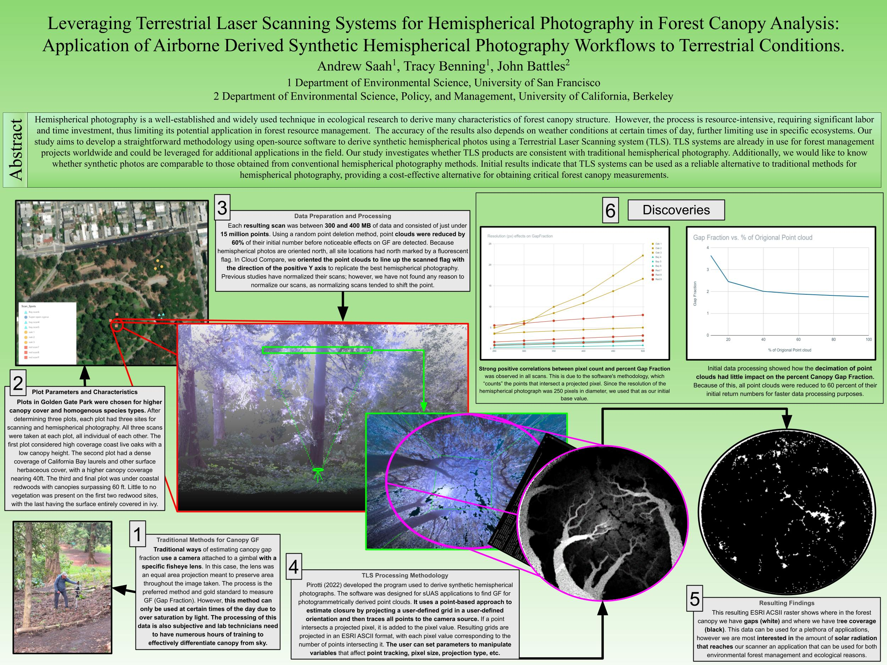

Title: Leveraging Terrestrial Laser Scanning Systems for Hemispherical Photography in Forest Canopy Analysis: Application of Airborne Derived Synthetic Hemispherical Photography Workflows to Terrestrial Conditions.
Authors: Andrew Saah, Tracy Benning, John Battles
Abstract: Hemispherical photography is a well-established and widely used technique in ecological research to derive many characteristics of forest canopy structure. However, the process is resource-intensive, requiring significant labor and time investment, thus limiting its potential application in forest resource management. The accuracy of the results also depends on weather conditions at certain times of day, further limiting use in specific ecosystems. Our study aims to develop a straightforward methodology using open-source software to derive synthetic hemispherical photos using a Terrestrial Laser Scanning system (TLS). TLS systems are already in use for forest management projects worldwide and could be leveraged for additional applications in the field. Our study investigates whether TLS products are consistent with traditional hemispherical photography. Additionally, we would like to know whether synthetic photos are comparable to those obtained from conventional hemispherical photography methods. Initial results indicate that TLS systems can be used as a reliable alternative to traditional methods for hemispherical photography, providing a cost-effective alternative for obtaining critical forest canopy measurements.
Back